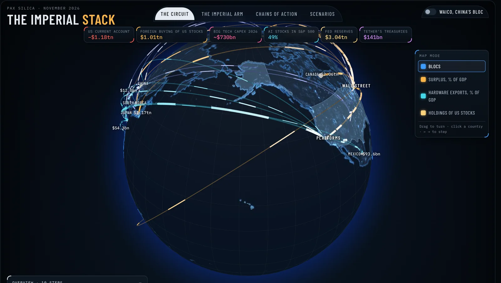

Crypto promised freedom – now it’s an American weapon
For years crypto looked like a way to escape the state and the banks. Now President Trump is using stablecoins to strengthen the dollar and to finance the US budget deficit.
Political economist & investigative journalist
I follow the money into politics: the dollar system, financial statecraft, and the surveillance technology that states buy from private firms.
Read by 3,300+ subscribers in 94 countries
For years crypto looked like a way to escape the state and the banks. Now President Trump is using stablecoins to strengthen the dollar and to finance the US budget deficit.
Documents show the justice ministry signed a contract with Palantir in 2014 to analyse passenger data. The minister left it out when parliament asked about the software.
On the death of the old world order and the crisis of liberalism.
The two things keeping Krugman up at night.
The thinkers behind ‘weaponized interdependence’ warn that the EU faces a stark choice in the age of geoeconomics: adapt or perish.
How US tech firms, the dollar and the American state work as one machine. Follow the money around a live globe, see who acts for the state, and step through ten cases where the stack was switched on or off.

Long-form analysis on the newsletter, free to read.

On the death of the old world order and the crisis of liberalism.
Read on Substack Illustration: Hania Zminkowska
The two things keeping Krugman up at night.
Read on Substack Photo: Aad Hoogendoorn
The thinkers behind ‘weaponized interdependence’ warn that the EU faces a stark choice in the age of geoeconomics: adapt or perish.
Read on Substack Photo: Helsinki, 1975 (Bundesarchiv)Documents, Woo requests and the paper trail between governments and the firms they rely on.
Original: Marechaussee werkte met omstreden techreus Palantir: minister verzweeg contract voor Tweede Kamer
The investigation started with freedom-of-information (Woo) requests I filed on my own initiative. They showed that the Ministry of Justice and Security signed a contract with Palantir in 2014 to analyse passenger data for the Royal Netherlands Marechaussee, a contract the minister did not mention when parliament asked about the software.
What happened next
Original: Crypto beloofde vrijheid – nu is het een Amerikaans wapen
For years crypto looked like a way to escape the state and the banks. Now President Trump is using stablecoins to strengthen the dollar and to finance the US budget deficit. How the GENIUS Act turns dollar stablecoins into buyers of US Treasuries.
Read the long read Illustration: Follow the MoneyPower, Profit & Politics is where I publish long-form analysis of the dollar system, financial statecraft and the political economy of Europe. Free to read, straight to your inbox.
Political economist first, journalist second: I’m Elias Rutten, and I work from Leiden, the Netherlands.
My work looks at where markets meet the state: the dollar system and financial statecraft, stablecoins and payment rails, and the surveillance and security technology that governments buy from private firms. I write investigations for Follow the Money, and my work has also appeared in de Volkskrant, Het Financieele Dagblad and with The Hague Institute for Geopolitics.
On my newsletter, Power, Profit & Politics, I publish long-form analysis for more than 3,300 subscribers in 94 countries.
For commissions, interviews, talks, or a story you think I should look into.